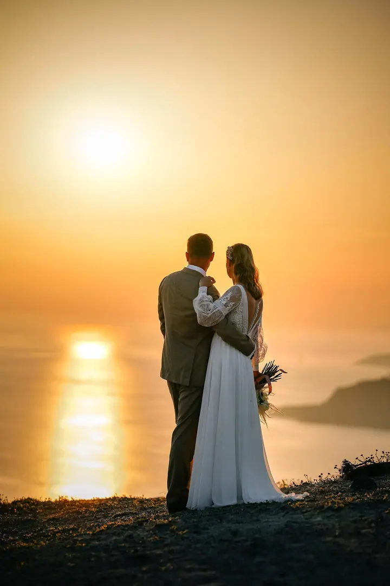
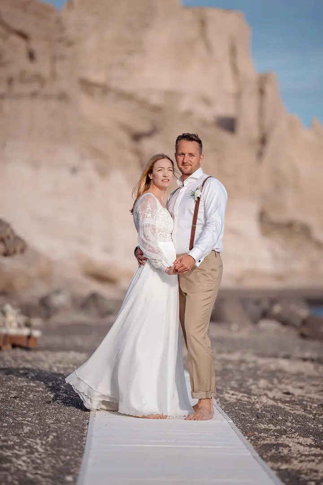
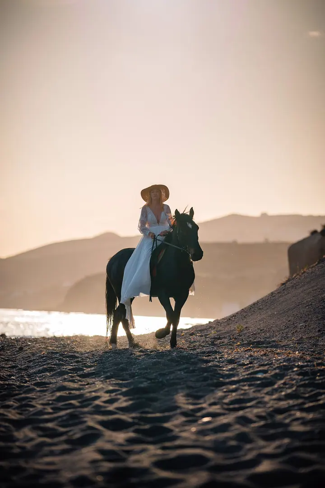

jedna
Svatby
Svatbu fotím reportážním stylem. Do dění nezasahuji a hledám atmosféru a opravdové emoce, společně pak vytvoříme portréty novomanželů a skupinové fotky.


Jmenuji se Martin Janeček a fotím svatby reportážním stylem. Do dění nezasahuji a hledám opravdové emoce a náladu celého dne. Mimo svatby fotím produkty a interiéry, a proto si atmosféry plné radosti vážím o to víc.
Více o mně
Co fotím
jedna
Svatbu fotím reportážním stylem. Do dění nezasahuji a hledám atmosféru a opravdové emoce, společně pak vytvoříme portréty novomanželů a skupinové fotky.
dvě
Fotím portréty lidí. Nejdřív spolu probereme, co od fotek čekáte, a pak společně vymyslíme, jak k tomu dojít.
Velkou část mé práce tvoří fotografie produktů včetně náročných retuší. Pomáhá mi v tom polygrafické vzdělání a grafický design.
Fotím nemovitosti a interiéry a výsledné snímky pečlivě retušuji, aby prostor vypadal co nejlépe.
Váš příběh, ne pohledy do objektivu.
Za objektivem
Fotky mě baví a naplňuje mě cesta k co nejlepšímu snímku. Fotografii se věnuji od dětství, mám polygrafické vzdělání a s fotografií úzce souvisí i moje druhá profese, grafický design.
Nejsem pouze svatební fotograf. Velkou část mé práce tvoří náročné retuše produktových a interiérových fotografií. Atmosféry a opravdových emocí je při focení produktů nebo nemovitostí poskrovnu, a proto mě svatby tolik baví.
Na svatbě jsem nenápadný a nechávám den plynout po svém. Chci, aby co nejvíce fotografií vyprávělo váš příběh, a ne aby na nich byl jen pár hledící do objektivu. Ve volném čase fotím krajinu.
Martin
Ozvěte se mi telefonem nebo přes formulář. Probereme vaše představy a možnosti a dozvíte se víc o tom, jak pracuji.
Společně projdeme průběh dne, abych věděl, kdy a kde má být co nafoceno, a mohl se pak držet v pozadí.
Fotím reportážně a do dění nezasahuji. Výjimkou je focení novomanželů a skupinové fotografie, které vytvoříme spolu.
Fotografie dostanete v reprezentativní online galerii, kterou můžete sdílet s rodinou a přáteli a sami si zvolit, které fotky budou viditelné a které skryté.
Portfolio
Otázky
Reportážním. Do dění nezasahuji, pohybuji se nenápadně a zachycuji atmosféru a skutečné emoce dne.
Jen při focení novomanželů a skupinových fotografií. I tehdy se snažím, aby fotky působily přirozeně a vyprávěly váš příběh.
V online galerii, kterou můžete sdílet s rodinou a přáteli. U jednotlivých fotek si sami nastavíte, jestli budou viditelné, nebo skryté.
Ne. Fotím také produkty, nemovitosti a interiéry, lidi, psy a natáčím video. Neváhejte mě kontaktovat i s jiným projektem.
Napište pár vět o tom, co si představujete. · +420 777 308 680